Introduction
PLCs (programmable logic controllers) are used within the operational technology (OT) space, such as in the industrial control systems (ICS) that manage manufacturing, energy generation, and robotics. PLCs are often integrated into SCADA systems, where a PLC is used to monitor inputs (e.g. temperature) and adjust outputs (e.g. motors) of a control system.
Most PLCs, made by the likes of Siemens and ABB, cost thousands of pounds to buy - not particularly beginner-friendly. However, I recently came across the OpenPLC Project, which lets you turn (among other things) an Arduino into a PLC!
Getting It All Working
Installation
Honestly, it’s surprisingly simple.
- Install the OpenPLC Runtime and Editor on your computer: https://www.openplcproject.com/runtime/windows/
- Upload the Modbus firmware to the Arduino and configure it in the OpenPLC web interface: https://www.openplcproject.com/runtime/arduino/
First Project
Again, OpenPLC walk you through it very well.
- Create the project in the OpenPLC Editor: https://www.openplcproject.com/reference/basics/first-project
- Upload it to the web interface and run it: https://www.openplcproject.com/reference/basics/upload
Video Walkthrough
I found a great pair of videos on YouTube, walking you through the above steps. If these videos didn’t exist, I’d make my own, but as they already do - give credit where credit is due!
Project Examples
All of the below projects (except the last one) use the same basic physical setup. I was using my large breadboard for my myopia measurer, and didn’t want to disassemble it. Fortunately my kit came with a tiny extension board, and as these projects only need one or two push-buttons and an LED, it was plenty for my needs. I ran out of red wires so orange represents +5V.
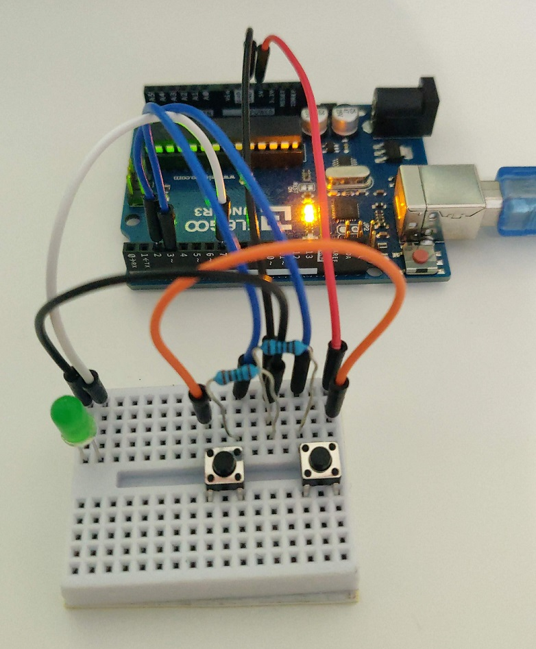
So what are you looking at? There’s an LED between the Arduino output (white wire) and ground, and there are two push-buttons, with one side connected to live (+5V), the other side connected to the Arduino inputs (blue wires) with pull-down resistors to ground. The pull-down resistors ensure that, when not pressed, the push-button provides a logic 0 (i.e. off) to the Arduino.
The below schematic is from the OpenPLC Project.
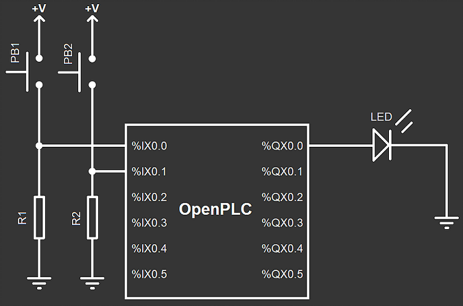
Two-Button Latching Circuit
The functionality of this circuit is simple. Press the Start button, and the LED starts. It will stay on (latched) until the Stop button is pressed. This turns a pair of push-buttons into an on-off switch.
You can see how it works, in stages, by the following diagram, courtesy of Inst Tools. Blue is activated.
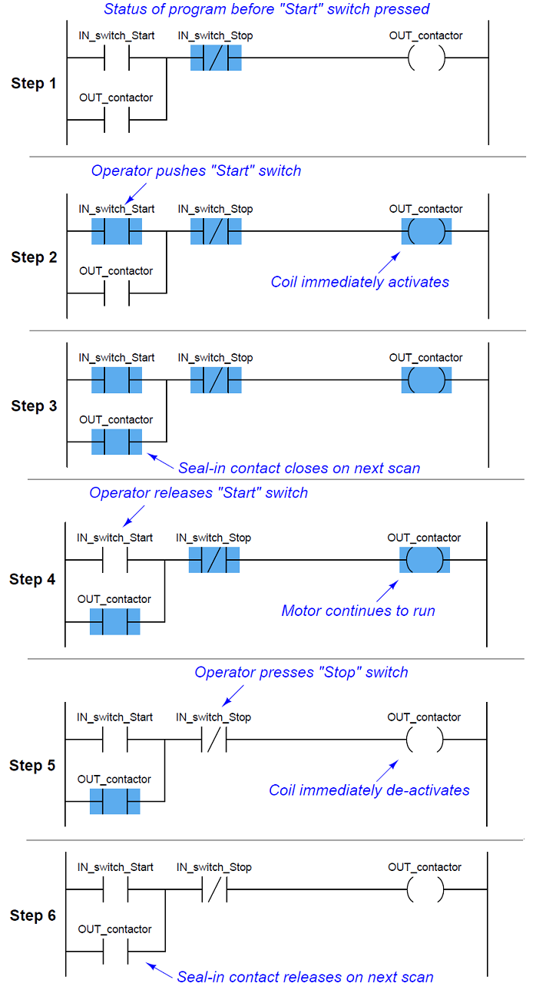
This is what it looks like in the OpenPLC Editor. Nice and simple. The location values are defined by OpenPLC, and are explained within the Arduino page on their website (link above).
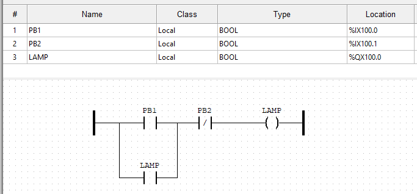
One-Button Latching Circuit with Emergency Stop
The functionality is the same as the previous one, except a single button is used for the latching on and off. This is even more like a switch!
This ladder logic came from mayurhaldankar.wordpress.com, via PLC Academy. I added the emergency stop - it is simply a normally-closed push-button (PB1) on the same rung as the coil.
These are the variables. Note M0 and M1 have no physical representation, and hence no location.
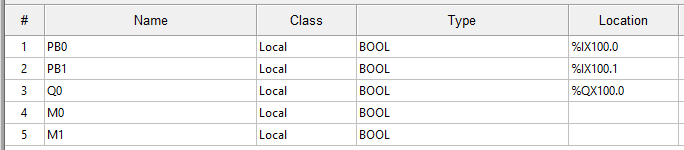
Using the OpenPLC simulator, you can see the operation from the following steady states. Note this is different from the diagram from Inst Tools above, as that is done rung-by-rung, whereas the below is done state-by-state. Note in particular the states of the coils M0 and M1 in relation to the “true” output Q0 (in my circuit, the LED).
Starting state:
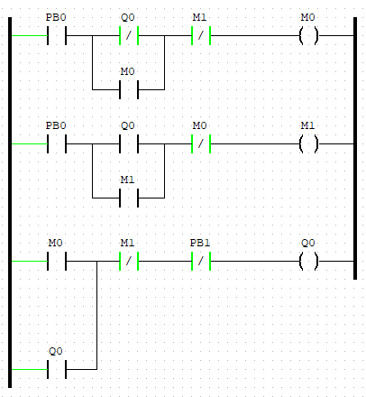
Press PB0 (forced true):
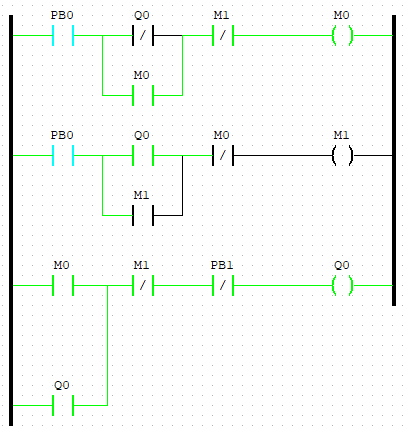
Release PB0 (force false):
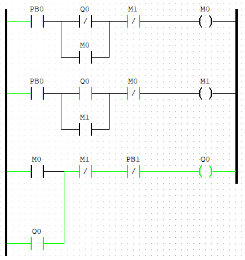
PB0 pressed again:
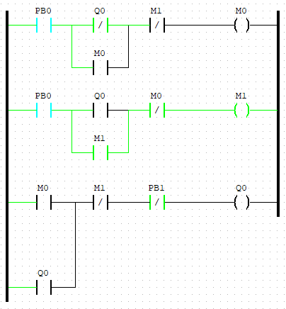
PB1 released again:
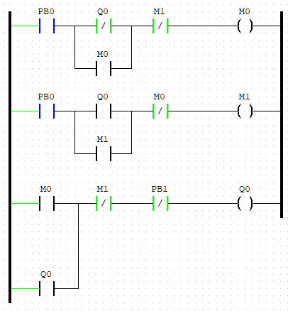
Playing with Timers
Timers are very commonly used in OT, such as turning a pump on 30 seconds after a motor has started, or turning a fan off five minutes after an engine has stopped. Basic ladder logic is constructed of contacts and coils, but there are also function blocks, of which on-timers and off-timers are among the most common.
This simply turns the LED on two seconds (the T#2000ms) after the button is pressed, and turns it off two seconds after the button is pressed a second time.
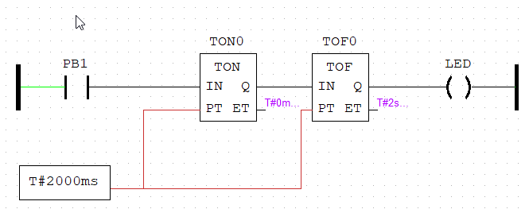
Steady(ish) State (e.g Temperature)
The idea of this design is to keep a variable within a threshold range (for example, water temperature). In reality the output would be the input (i.e. it would have feedback), and it would use more a complex control system (e.g. PIDs), but this is just a simple experiment using comparative function blocks.
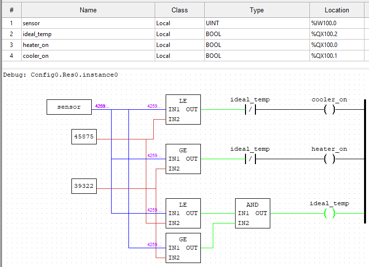
In this design, if it is within the threshold range, the “ideal temperature” light (green LED) comes on. If it’s below, the “increaser” comes on (e.g. turn on a heater - simulated by the red LED). If it’s above, the “decreaser” comes on (e.g. turn on a cooler - simulated by the blue LED). Note the NC contactor relating to the ideal_temp coil - in other words, if it’s within the ideal range, neither the increaser or decreaser can function.
Due to how OpenPLC works, the input is an (unsigned) 16-bit integer. This means the value range is 0 to 65536 (2^16). Obviously this doesn’t relate well to water temperature! For this experiment, let’s say 0 is 0°C and 65536 is 100°C. The optimum temperature range is 60-70°C - perfect for your cup of tea or coffee. This means 60% and 70% of 65536, or the lovely round numbers of 39322 and 45875 (both to zero decimal places).
Here it is in action. Note this uses a different circuit to the other examples, as it has three LEDs and a potentiometer.
Comments?
Feel free to comment on my LinkedIn post.